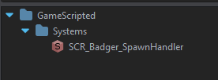
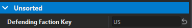
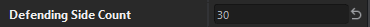
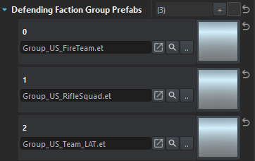
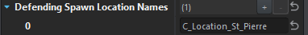

Placable Entity
I wanted to create a configurable Spawn Handler which would maintain a certain number of units per faction overtime.
In order for my class to appear in the Resource Browser I did the following:
Created SCR_Badger_SpawnHandler
Now I'm not entirely sure why we need a class variant AND a plain version but.... I saw a pattern. I followed it....
class SCR_Badger_SpawnHandlerClass : GenericEntityClass
{
};
class SCR_Badger_SpawnHandler : GenericEntity
{
};
Resource Browser
To specify where this entity is viewed within the Resource Browser I had to add the following attribute to the class variant
[EntityEditorProps(category: "GameScripted/Systems", description: "Entity which manages AI" )]
class SCR_Badger_SpawnHandlerClass : GenericEntityClass
{
};

Editor-Driven Values
Believe we can all agree that hardcoded values are no fun. As a mission-maker you want to swap stuff out on the fly! In my scenario I wanted 2 sides where I can define the following:
- Faction Key
- General number of units to maintain for this faction
- Group prefabs to spawn
- Locations for these groups to spawn at
- Waypoint Prefab to use for said faction
The Enfusion Engine allows us to specify how to expose/edit a particular value in our scripts! From a picker to a simple textbox.
Note: all the code shown will be within the SpawnHandler, not the SpawnHandlerClass.
Faction Key
[Attribute("", UIWidgets.EditBox, desc: "Name of the defending faction")]
private FactionKey m_DefendingFactionKey;

This faction key is defined by the FactionManager that you have loaded in the world scene. So as long as this matches with one of the listed factions you're good.
Count
[Attribute("", UIWidgets.Range, desc: "Amount of defending units")]
private int m_DefendingSideCount;

Probably doesn't need to be a range? Also not sure how to declare a min/max value for it yet.
Group Prefabs
[Attribute("", UIWidgets.ResourcePickerThumbnail, "Prefab to be spawned", params: "et")]
private ref array<ResourceName> m_DefendingFactionGroupPrefabs;

The params value allows us to limit files with the et file extension. Though it doesn't necessarily limit the type of prefab... better than nothing right?
Additionally, ResourceName is essentially the path to the file. I guarantee you... writing these paths by hand is not fun. When it comes time to load the prefab we'll use the Resource.Load function.
Spawn Locations
Personally, in previous Arma games I used the map config to dynamically load/find map locations. However I don't know how or even IF that is a thing anymore. From existing code it appears finding things via EntityName is one approach. Thus an array of strings is needed. On load we'll grab all entities via name so we have them on hand later.
[Attribute("", UIWidgets.EditBox)]
private ref array<string> m_DefendingSpawnLocationNames;

General
Of course whatever is done for the defending side was duplicated for the attacking side as well.
[Attribute("", UIWidgets.EditBox)]
private int m_GeneralSpawnRadius;
[Attribute("", UIWidgets.ResourcePickerThumbnail, desc: "Pick Waypoint prefab for attackers")]
private ResourceName m_AttackWaypointPrefab;
[Attribute("", UIWidgets.ResourcePickerThumbnail, desc: "Pick Waypoint prefab for defenders")]
private ResourceName m_DefendWaypointPrefab;

As you can probably notice is the two waypoints are the same BUT that's the beauty of configurable values... we can swap the AI behavior out without modifying our code!
Local values
There are a few things we need to load at startup, as well as track during the lifetime of our handler.
First, we need a way to track how many AI are on the map so we need 2 variables, 1 per side.
private int m_CurrentDefendingEntityCount = 0;
private int m_CurrentAttackingEntityCount = 0;
Additionally, we need the actual entities associated with our spawn locations. Spawn points will be a random position around these locations.
private ref array<IEntity> defendingSpawnLocations = {};
private ref array<IEntity> attackingSpawnLocations = {};
Also, to get a random point in an area we can use the RandomGenerator which unfortunately can't give a random number? Perhaps something else has it but for now I've been using an array of numbers to use when figuring out how many groups to spawn at a time.
Lastly, we'll want a reference to our world...
private ref array<int> spawnCounts = { 1, 2, 3, 4, 5, 6, 7 };
private ref RandomGenerator random;
private BaseWorld world;
Initialization
When we start the game we need a way to kick off our code as well as initilize things. Furthermore we want to make sure things don't break while we're in the editor.
void SCR_Badger_SpawnHandler(IEntitySource src, IEntity parent)
{
SetEventMask(EntityEvent.INIT);
Activate();
}
protected override void EOnInit(IEntity owner)
{
if(!GetGame() || !GetGame().GetWorld())
return;
world = GetGame().GetWorld();
random = new RandomGenerator();
Print("Loading locations...");
LoadLocations();
Print("Starting SpawnHandler Loop...");
SpawnLoop();
}
This is enough to get our stuff going! If we're in the editor the world is technically "not loaded" so this will prevent our code from executing until the game's actually running.
Load Locations
void LoadLocations()
{
// This should be straight forward. We're only adding entities that were found to their
// corresponding arrays
foreach(string name : m_DefendingSpawnLocationNames)
{
IEntity location = world.FindEntityByName(name);
if(location) // if found
defendingSpawnLocations.Insert(location);
}
foreach(string name : m_AttackingSpawnLocationNames)
{
IEntity location = world.FindEntityByName(name);
if(location) // if found
attackingSpawnLocations.Insert(location);
}
}
Spawn Loop
void SpawnLoop()
{
// Spawn only if we haven't capped out
if(m_CurrentDefendingEntityCount < m_DefendingSideCount)
{
int count = spawnCounts.GetRandomElement();
for(int i = 0; i < count; i++)
{
ResourceName prefab = m_DefendingFactionGroupPrefabs.GetRandomElement();
IEntity entityLocation = defendingSpawnLocations.GetRandomElement();
Spawn(prefabName, location, false);
}
}
if(m_CurrentAttackingEntityCount < m_AttackingSideCount)
{
int count = spawnCounts.GetRandomElement();
for(int i = 0; i < count; i++)
{
ResourceName prefab = m_AttackingFactionGroupPrefabs.GetRandomElement();
IEntity entityLocation = attackingSpawnLocations.GetRandomElement();
Spawn(prefabName, location, true);
}
}
// Call later uses milliseconds (1000 for 1 second)
// So this means in 2 minutes this loop will get called again
// Thus making a recursive method
GetGame().GetCallqueue().CallLater(SpawnLoop, 120 * 1000, false);
// Update the local counts
CountSides();
}
Spawn
void Spawn(ResourceName prefab, IEntity spawnPoint, bool isAttacking=true)
{
if(!world || prefab.IsEmpty())
return false;
Resource resource = Resource.Load(prefab);
EntitySpawnParams params();
// position of spawn point
vector mat[4];
spawnPoint.GetWorldTransform(mat); // outputs the transform into our vector
// we need to generate a random position in area
vector position = mat[3];
position = random.GetnerateRandomPointInRadius(10, m_GeneralSpawnRadius, position);
// Ensure the position is snapped to the ground
position[1] = spawnPoint.GetWorld().GetSurfaceY(position[0], position[2]);
mat[3] = position;
// update our spawn params
params.TransformMode = ETransformMode.WORLD;
params.Transform = mat;
// Our prefabs should be groups of AI.
SCR_AIGroup group = SCR_AIGroup.Cast(GetGame().SpawnEntityPrefab(resource, world, params));
if(!group)
return false;
group.SetFlags(EntityFlags.VISIBLE, true);
SetWaypointFor(group, isAttacking);
return true;
}
Waypoint Creation and Assignment
AIWaypoint CreateWaypoint(ResourceName waypointPrefab)
{
Resource resource = Resource.Load(waypointPrefab);
if(!resource)
return null;
AIWaypoint wp = AIWaypoint.Cast(GetGame().SpawnEntityPrefab(resource));
return wp;
}
void SetWaypointFor(SCR_AIGroup group, bool isAttacking=true)
{
IEntity randomLocation = defendingSpawnLocations.GetRandomElement();
AIWaypoint waypoint;
if(isAttacking)
waypoint = CreateWaypoint(m_AttackWaypointPrefab);
else
waypoint = CreateWaypoint(m_DefendWaypointPrefab);
if(!waypoint)
{
Print("Error creating waypoint", LogLevel.WARNING);
return;
}
// We could apply similar random positioning here if we wanted
waypoint.SetOrigin(randomLocation.GetOrigin());
group.AddWaypoint(waypoint);
}
Count Sides
void CountSides()
{
ref private array<AIAgent> entities = {};
AIWorld aiWorld = GetGame().GetAIWorld();
aiWorld.GetAIAgents(entities);
m_CurrentDefendingEntityCount = 0;
m_CurrentAttackingEntityCount = 0;
foreach(AIAgent agent : entities)
{
// Appears the AI component is this so if we can successfully cast / find this on our agent we're good!
SCR_ChimeraAIAgent chimera = SCR_ChimeraAIAgent.Cast(agent.FindComponent(SCR_ChimeraAIAgent));
if(!chimera)
continue;
if(chimera.GetFaction(agent).GetFactionKey() == m_AttackingFactionKey)
m_CurrentAttackingEntityCount += 1;
else if(chimera.GetFaction(agent).GetFactionKey() == m_DefendingFactionKey)
m_CurrentDefendingEntityCount += 1;
}
}